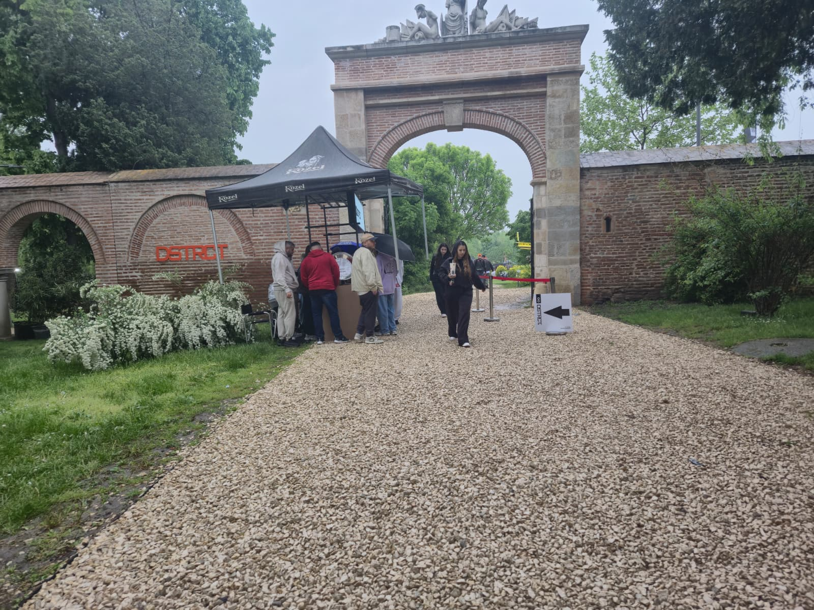
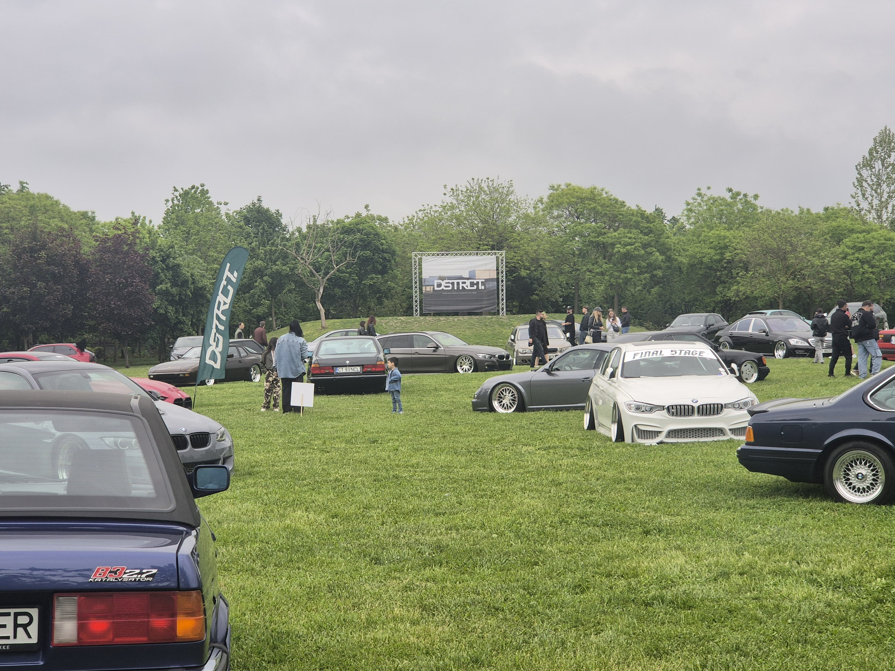
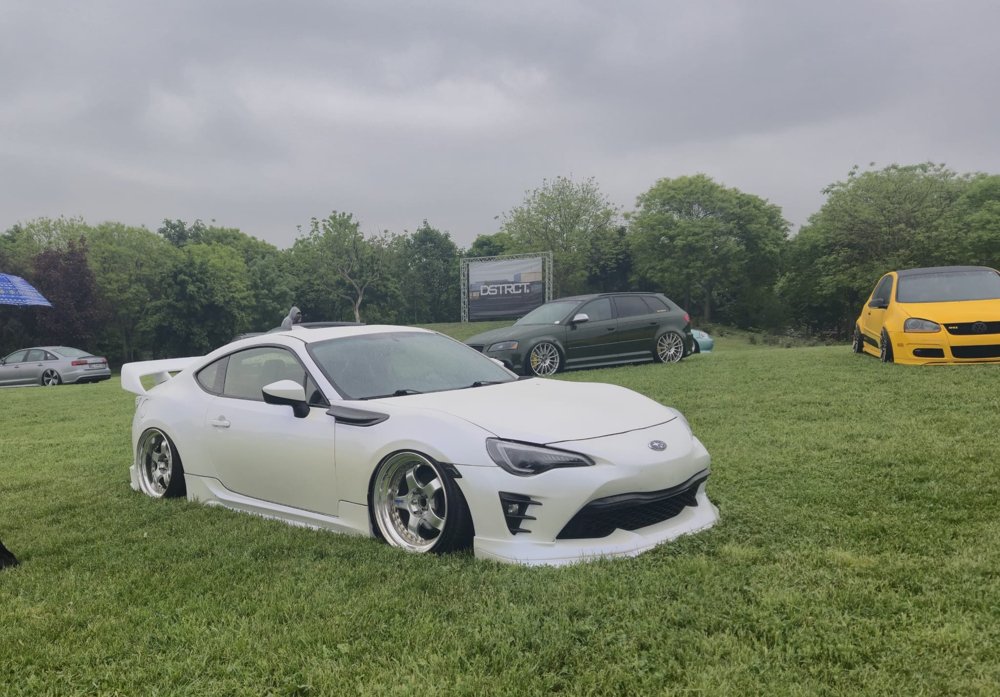
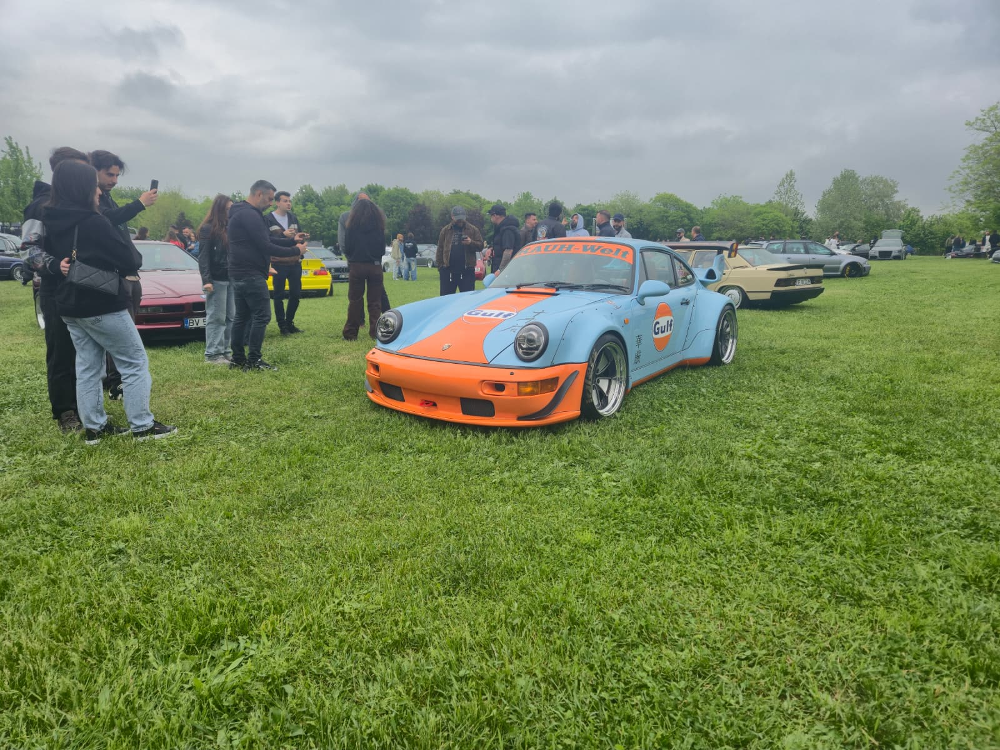

O duminică altfel la Mogoșoaia

Mașini tari, mâncare bună și relaxare pe malul lacului
Ca student în București, e foarte ușor să intri într-o rutină plictisitoare. Te împarți mereu între facultate, sesiune, aceleași cafenele din centru și seri lungi în cămin când povestești cu colegii despre examene. În weekendul acesta am simțit că am nevoie urgentă de o pauză și de puțin aer curat, așa că am decis să las în spate cursurile și să ies din oraș. Am fugit până la Palatul Mogoșoaia, iar motivul a fost o super expoziție auto organizată chiar acolo, în parc.

Modele exclusiviste și mașina visurilor mele la DSTRCT VIII
A fost vorba despre cel de-al optulea eveniment din seria celor de la DSTRCT, iar atmosfera m-a surprins total de cum am ajuns. Parcul era plin de energie și avea un vibe exact ca de festival. Peste tot pe alei și pe iarbă erau aliniate mașini extrem de diverse, pentru toate gusturile. Au fost prezente branduri mari precum BMW, Audi, Porsche, Volkswagen, Honda, Ferrari, Volvo, Subaru și Toyota.
Fiecare mașină avea ceva special, aleasă parcă pe sprânceană, dar eu m-am oprit instant când am văzut-o pe cea a visurilor mele: un Subaru BRZ care aparținea chiar unei fete. Avea o culoare incredibilă, un alb perlat roz care pur și simplu îți lua ochii. Deși nu era modificată exact pe stilul meu, era atât de frumoasă încât aș fi dat orice să fie a mea.

Piesa de rezistență a acestei ediții a fost cu siguranță un model Porsche 911 spectaculos. Această mașină are o poveste aparte, fiind asamblată de către celebrul Akira Nakai chiar în timpul vizitei sale în România, la Custom Tuning Garage. Deși el nu a fost prezent la eveniment, românul care l-a ajutat direct să o asambleze a fost acolo.

Este vorba despre Laurențiu Oprea, sau Sese, cum îi spun prietenii. El și restul numelor cunoscute în lumea tuningului au fost extrem de deschiși și de prietenoși, stând de vorbă cu absolut orice doritor sau fan care voia să afle mai multe detalii despre mașinile modificate.
Street food, chill pe malul lacului și un bilet la preț de pont
Pe lângă toate aceste bijuterii pe patru roți, vremea de afară a ținut cu noi și a completat perfect vibe-ul mișto. Prețul pentru bilet a fost chiar un pont bun, eu reușind să îl prind la doar 65 de lei pentru ambele zile ale evenimentului, ceea ce pentru bugetul nostru e mai mult decât decent având în vedere tot ce puteai să vezi acolo.
După ce am admirat mașinile și am stat de vorbă cu oamenii din comunitate, m-am oprit în zona cu food truck-uri și mi-am luat ceva bun de mâncare. Să stai pe iarbă, direct pe malul lacului, să mănânci un burger cald și să prinzi puțin soare alături de prieteni este definiția perfectă a relaxării după o săptămână plină de proiecte obositoare.
Toată lumea din jur era relaxată și se bucura de zi fără să se grăbească nicăieri.
Cum ajungi rapid și ieftin din Gara de Nord
Partea mai bună pentru noi, ca studenți, este că o astfel de ieșire este foarte accesibilă și deloc complicată. Nu ai nevoie de mașină personală și nu trebuie să dai o avere pe Uber. Poți lua trenul direct din Gara de Nord și în aproximativ un sfert de oră ai ajuns la stația Mogoșoaia, iar biletul de tren este chiar ieftin.
De la stație mai faci o scurtă plimbare pe jos și ești direct în parc. Este varianta ideală când vrei să îți limpezești mintea și să te întorci la cursuri cu bateriile complet încărcate.
O astfel de zi îți demonstrează că nu trebuie să pleci neapărat la mare sau la munte ca să simți că ai avut un weekend reușit. Mixul dintre mașini cu povești unice, mâncare bună, muzică și peisajul de pe malul lacului a transformat o duminică obișnuită într-o super experiență. Ne-am întors în București puțin obosiți de la mersul pe jos, dar cu o stare mult mai bună și cu telefoanele pline de poze faine.
Voi cum ați ales să vă petreceți weekendul acesta și ce alte locuri faine de lângă București ați mai descoperit în ultima vreme? Lăsați-mi părerile voastre mai jos în secțiunea de comentarii, iar dacă v-a plăcut articolul, nu uitați să îl trimiteți și colegilor voștri care au nevoie de o idee bună de ieșire pentru weekendul viitor!
Înapoi la articole
Lasă un comentariu